A NEW LIFE FOR YOUR MUSIC HARDWARE
Small games.
Big play energy.
Drop in a Game Boy cartridge. Play in your browser.
Then turn your FM-1 into a pocket arcade.

LIVE BROWSER PLAYER 160 × 144 · GB
GAMEDUDECOLOR YOUR PLAY.
WAITING FOR A CARTRIDGE
Choose a ROM, or try the original test cartridge.
Browser saves stay on this computer.
WASD / ARROWS move · SPACE B · ENTER A · P starts · SHIFT selects
YOUR CARTRIDGES
Bring the games you own.
Original GB ROMs and ZIPs containing one .gb file. GBC-only and GBA games aren’t supported.
BUILT FOR PLAY
One emulator. Two ways to play.
The browser player uses the same Game Boy emulator as the firmware. FM-1 flashing is available; SMK37 firmware remains in development.
OPEN BY DESIGN
Make it your own.
Built on Peanut-GB, MiniGB APU and Felucca/MusicCoach hardware work. Source, credits and licenses are included.